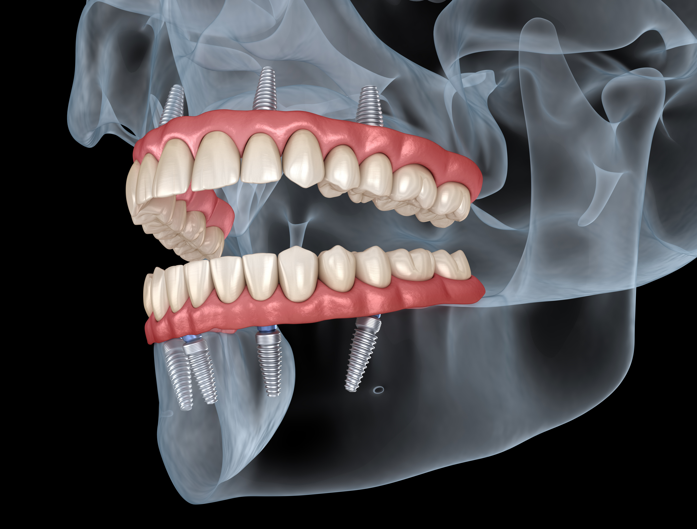
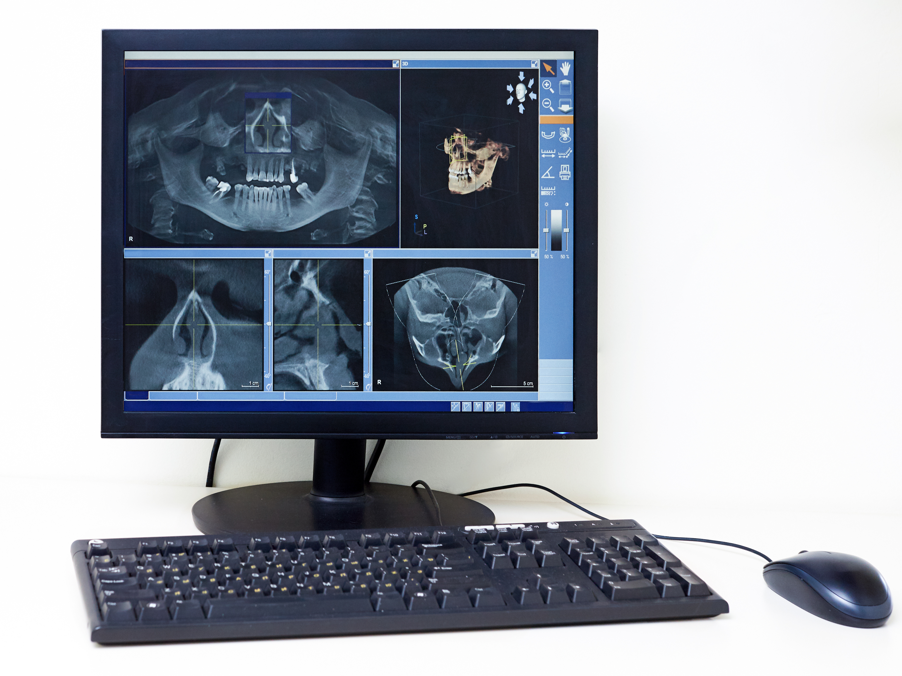
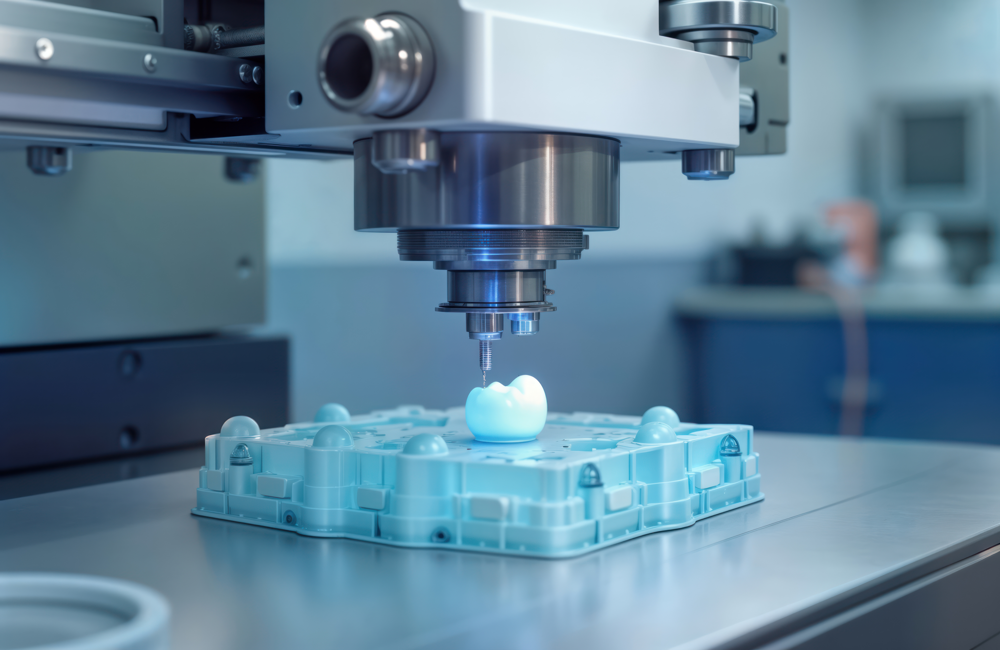

Annual Dental Check-up
Our smiles bring boundless joy, confidence, and well-being into our lives. As responsible individuals, it is our duty to ensure our dental health by prioritising preventive care, and a crucial aspect of this care is the Annual Dental Check-up. This routine examination serves as a cornerstone in maintaining your dental health and happiness
Early Detection of Health Issues
Dental Check-ups provide dentists with the opportunity
to detect potential health issues early on. Just as regular doctor visits are vital for humans,
routine check-ups for dental health allow dentists to identify and address emerging health
concerns before they escalate. Early detection often leads to more effective treatments and a
higher chance of successful outcomes
Preventive Care
Regular cleanings and check-ups are a fundamental component of the Annual
Dental Check-up. These preventive measures protect you from serious, and sometimes life-
threatening, dental diseases. Additionally, preventive measures such as X-rays and dental check-
ups contribute significantly to your overall well-being.
Tailored Nutritional Guidance
Individuals, like humans, have unique dietary needs at different
stages of their lives. The Annual Dental Check-up provides an opportunity for dentists to assess
your nutritional requirements and offer guidance on a diet that supports your dental health and
vitality.
Dental Health Evaluation
Health is often overlooked, yet it plays a crucial role in your
overall health. During the check-up, dentists examine the condition of your teeth and gums,
addressing any signs of dental disease. Good oral hygiene can prevent a range of health issues
and contribute to a longer, healthier life.
Holistic Well-being
Addressing specific health concerns, Annual Dental Check-ups
contribute to the holistic well-being of your dental health. A dentist's expertise can guide you in
providing the best environment, oral hygiene routine, and mental stimulation for your dental
health, ensuring overall happiness and quality of life.
Addressing Behavioural Changes
Individuals, like humans, can experience changes in behaviour
that may indicate underlying health issues. Annual Dental Check-ups offer an opportunity to
discuss any behavioural changes with your dentist, allowing for early intervention and tailored
solutions.
Early Detection of Health Issues
- Dental Check-ups provide dentists with the opportunity
to detect potential health issues early on. Just as regular doctor visits are vital for humans,
routine check-ups for dental health allow dentists to identify and address emerging health
concerns before they escalate. Early detection often leads to more effective treatments and a
higher chance of successful outcomes
Preventive Care
- Regular cleanings and check-ups are a fundamental component of the Annual
Dental Check-up. These preventive measures protect you from serious, and sometimes life-
threatening, dental diseases. Additionally, preventive measures such as X-rays and dental check-
ups contribute significantly to your overall well-being.
Tailored Nutritional Guidance
- Individuals, like humans, have unique dietary needs at different
stages of their lives. The Annual Dental Check-up provides an opportunity for dentists to assess
your nutritional requirements and offer guidance on a diet that supports your dental health and
vitality.
Dental Health Evaluation
- Health is often overlooked, yet it plays a crucial role in your
overall health. During the check-up, dentists examine the condition of your teeth and gums,
addressing any signs of dental disease. Good oral hygiene can prevent a range of health issues
and contribute to a longer, healthier life.
Holistic Well-being
- Addressing specific health concerns, Annual Dental Check-ups
contribute to the holistic well-being of your dental health. A dentist's expertise can guide you in
providing the best environment, oral hygiene routine, and mental stimulation for your dental
health, ensuring overall happiness and quality of life.
Addressing Behavioural Changes
- Individuals, like humans, can experience changes in behaviour
that may indicate underlying health issues. Annual Dental Check-ups offer an opportunity to
discuss any behavioural changes with your dentist, allowing for early intervention and tailored
solutions.
Annual Dental Check-Up
The package includes the following services:
- A thorough examination of your overall dental health, including checking for any signs of illness, abnormalities, or discomfort
- Ensuring that your teeth are clean and free from plaque and tartar
- Assessment and preventive measures against common dental issues.
- Evaluation of your dental health, including checking for signs of dental disease and providing advice on dental care.
- Discussion about your diet, nutritional needs, and recommendations for maintaining a healthy smile.
- Additional diagnostic tests may be recommended based on your age, dental history, or specific health concerns.
Physical Examination
Cleanings
X-Rays
Dental Check-Up
Nutritional Guidance
Blood Tests or Laboratory Work (if necessary)
To sumup, investing in the Annual Dental Check-up is an investment in your lifelong health and happiness. This proactive approach to dental care not only safeguards against potential health issues but also strengthens the bond between you and your dentist. Schedule your Annual Dental Check-up today and embark on a journey of comprehensive care that ensures a vibrant and fulfilling life for your dental health.
Our New Dental Technologies:
At 100SMILES Dental Care, we are committed to staying at the forefront of dental technology to provide our patients with the best possible care. Here are some of the cutting-edge technologies we have recently integrated into our practice:

Digital X-Rays: Our state-of-the-art digital X-ray system provides high-resolution images with significantly less radiation exposure compared to traditional X-rays. This technology allows for quicker and more accurate diagnoses, ensuring that we can address dental issues promptly and effectively
- 
Intraoral Cameras: Our intraoral cameras offer a detailed view of your mouth, allowing us to capture high-quality images of your teeth and gums. This technology enhances our ability to detect and diagnose dental problems early, and it also helps us to better explain treatment options to our patients.

Laser Dentistry: We have incorporated advanced laser technology into our practice, which allows for minimally invasive procedures with reduced pain and faster healing times. Laser dentistry is used for a variety of treatments, including gum disease therapy, cavity detection, and teeth whitening.

CAD/CAM Technology: Our CAD/CAM (Computer-Aided Design and Computer-Aided Manufacturing) system enables us to create precise and custom dental restorations, such as crowns, bridges, and veneers, in a single visit. This technology ensures a perfect fit and natural appearance, providing our patients with durable and aesthetically pleasing results.
- 
3D Printing: We utilize 3D printing technology to create accurate dental models, surgical guides, and custom appliances. This innovation allows for more precise treatment planning and improved outcomes for our patients.
- 
Teledentistry: Our teledentistry services provide convenient access to dental care from the comfort of your home. Through virtual consultations, we can assess your dental concerns, provide professional advice, and develop treatment plans without the need for an in-office visit.